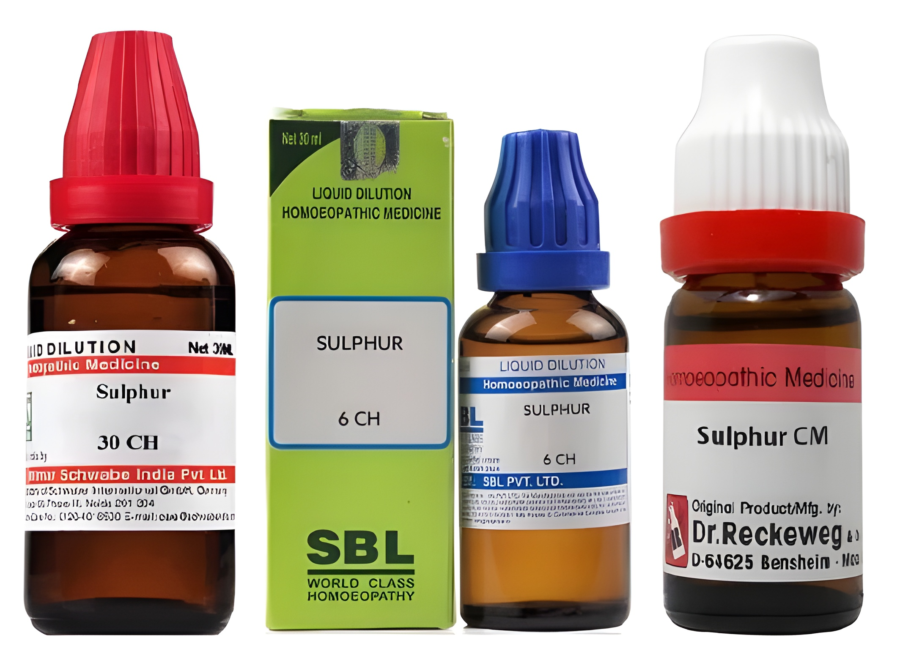
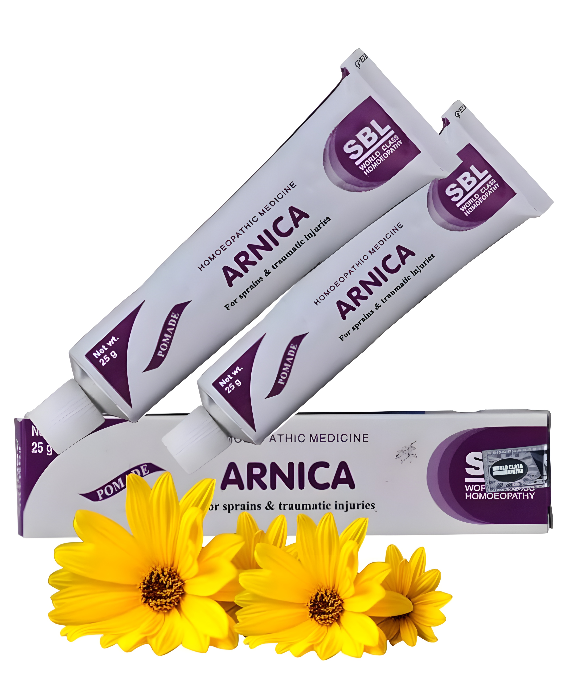

Diabetes Support
Supportive homeopathy care for patients managing long-term sugar-related concerns.
Serving families for 35+ years
Trusted homeopathy care for local and outstation patients, with personalized guidance and safe, natural remedies for long-term wellness.
Gentle remedies selected according to the patient’s condition and history.
Three decades of practical clinic experience and patient-focused care.
Helpful consultation and medicine guidance for outstation patients.
About the clinic
Sri Venkateswara Homeo Stores has been serving patients for more than 35 years with a focus on safe, natural, and individualized homeopathy treatment. The clinic supports people looking for steady care for chronic conditions, recurring health concerns, and lifestyle-related disorders.
Every consultation is approached with attention to symptoms, habits, health history, and the person behind the illness. Along with regular patient care, the store also provides veterinary homeopathy medicines for cattle and poultry.
Conditions we treat
Treatment plans are personalized after consultation. The focus is on understanding the root pattern of the complaint and supporting gradual improvement.
Supportive homeopathy care for patients managing long-term sugar-related concerns.
Consultation for recurring pains, stiffness, swelling tendencies, and mobility discomfort.
Care for recurring skin irritation, allergies, itching, eruptions, and long-standing complaints.
Individualized support for lifestyle-linked thyroid symptoms and related wellness concerns.
Steady care for recurring, long-term, or constitution-based health issues.
Homeopathy guidance for dandruff, hair fall, scalp issues, and repeated skin flare-ups.
Available medicines
Availability can vary by brand and potency. Please call before visiting if you need a specific medicine.
Commonly used medicated globules for regular homeopathy prescriptions.
Tablet medicines available for selected homeopathy and supportive needs.

Liquid dilutions in different potencies, guided by patient requirement.
Drop medicines for selected concerns, used with proper dosage guidance.

External-use ointments for suitable skin, pain, and supportive care needs.
Unique offering
Along with patient care, Sri Venkateswara Homeo Stores provides veterinary homeopathy medicines for common animal and poultry needs. This makes the store a useful stop for families, farmers, and local caretakers.
Tell us the animal type, age, symptoms, and how long the issue has been present so suitable medicine guidance can be suggested.
Why choose us
Long-standing service and practical understanding of varied patient concerns.
Known among local families and outstation patients seeking reliable homeopathy care.
Consultations consider symptoms, patterns, lifestyle, and overall wellness.
Gentle medicines and clear guidance for responsible homeopathy use.
Patient trust
“A dependable place for homeopathy medicines and patient guidance.”
“Helpful consultation support for outstation patients.”
“Veterinary medicines are useful for farm needs and easy to ask about.”
Photos
This section is ready for real photos. Add images to assets/photos, then list them in site-data.js.
Common questions
Yes. The clinic supports patients with recurring and long-term health concerns after consultation.
Yes. Patients can call first, share their concern, and confirm the next step before visiting.
Yes. Medicines are available for cows, buffaloes, and poultry. Please share symptoms before purchase.
Share the main complaint, how long it has been present, current medicines if any, age, and any recurring pattern you have noticed.
Yes. The clinic supports recurring skin irritation, allergy tendencies, dandruff, hair fall, and scalp-related concerns after consultation.
Yes. Calling or messaging on WhatsApp is the quickest option for timings, medicine availability, and basic guidance before visiting.
"The physician's highest calling, his only calling, is to make sick people healthy - to heal, as it is termed."
- Dr. Samuel Hahnemann
Contact